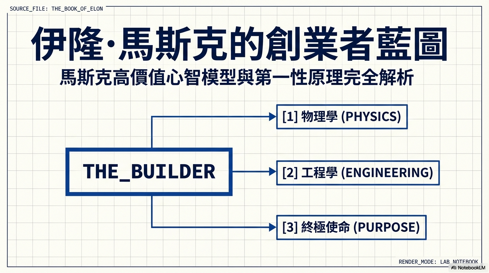
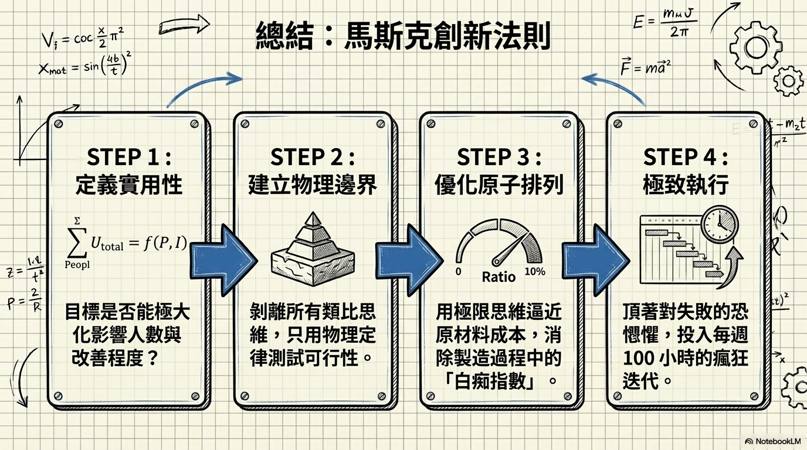

這不是傳統傳記，而是直接從 Elon 的話語中提煉出的實用洞見——第一性原理思考、追求有意義的工作、解決重要問題、打造推動人類前進的東西。
《The Almanack of Naval Ravikant》（中譯：《納瓦爾寶典》）和《The Anthology of Balaji》（中譯：《巴拉吉選集》）的作者，系列作品累計超過 500 萬讀者。同時也是新創投資人和 Podcast「Smart Friends」的主持人。
他的使命是：「幫助創造一百萬個像 Elon Musk 一樣思考和建造的人。」
Eric 相信這本書的資訊能幫助每一個人。如果你無法取得或負擔這本書，他想親自送給你——完整內容免費閱讀和下載。
Kindle 版本 $4.99 · Naval Ravikant 作序推薦


本書使命
「腦中有好想法的人越多，每個人都越受益。」
— Eric Jorgenson
每章 5-10 分鐘，精煉書中故事、核心重點、金句和概念圖解。
做有用的人、為未來而戰、像地獄般工作、直面恐懼
第一性原理、極限思維、追求真相、渴望「更少的錯」
工程是魔法、工程贏得戰爭、工程創造價值
承擔責任、深度理解、睡在工廠、逆境鍛造力量
建立建造者文化、只留特種部隊、回饋重於感受
消除組織邊界、簡單溝通、創新需要失敗的許可、The Algorithm
不浪費時間、平行處理、拆解不可能、激進的時間表
真正的工作、工廠就是產品、攻擊瓶頸、製造就是護城河
Zip2 的起點、All In PayPal、傾聽並快速修正
保護地球的使命、序列策略、讓人們用更少得到更多
唯一瘋狂到做太空的人、火箭的第一性原理、炸東西才能進步